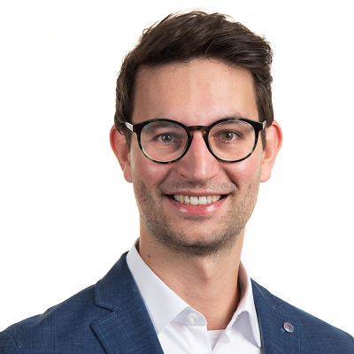

Evolution of tumor heterogeneity
I use stochastic agent-based models to study how mutation, phenotypic switching and migration shape tumor heterogeneity and treatment response.
I study how spatial structure and phenotypic plasticity shape tumor evolution and treatment resistance.
I connect the behavior of individual cells to population-level theory, using stochastic models, mathematical analysis and experimental data.

Cancer is my principal model system for a broader question: how do phenotypic plasticity and heterogeneity determine whether a population adapts, persists or collapses?
The animation could not load. The still image shows the simulated tumor.
In our tumor evolution model, cells change between migratory and proliferative states controlled by inherited and mutation-driven genotypes and the cells’ microenvironment. We observe that cells at the tumor edge evolve to favor migration over proliferation and vice versa in the tumor bulk. Notably, different genetic configurations can result in this pattern of phenotypic heterogeneity. Tumors display varying levels of genetic and phenotypic heterogeneity, which we show are predictors of tumor recurrence time after treatment. Interestingly, higher phenotypic heterogeneity predicts poor treatment outcomes, unlike genetic heterogeneity.
Read the paperMy research connects cellular variability, spatial interactions and population dynamics through three complementary approaches.
I use stochastic agent-based models to study how mutation, phenotypic switching and migration shape tumor heterogeneity and treatment response.
I derive population equations from agent-based birth, death and mutation dynamics and compare them with simulations. Current work examines mutational load, evolutionary rescue and the limits of these approximations.
I combine mechanistic models with Bayesian inference to connect cellular mechanisms to experimental observations and quantify uncertainty in model predictions.
Ongoing collaborations address cancer invasion and immunotherapy with the Friedl group (Radboud UMC, Nijmegen, The Netherlands), lung-cancer treatment resistance with the Marusyk group (Moffitt Cancer Center, Tampa, FL, USA), and glioblastoma heterogeneity with the Perez-García group (University of Castilla-La Mancha, Spain). I welcome imaging, cell-assay and single-cell data that can help shed light on tumor evolution and phenotypic plasticity.
Discuss a research questionA spatial model connects evolving plasticity to tumor organization and recurrence after simulated treatment.
A framework for representing individual genetic and phenotypic cell states within lattice-gas cellular automata.
Collaborative experimental and modeling work examining how adhesion and tissue confinement shape collective invasion.
* Shared first authorship. See Google Scholar for the full publication list.
Lindau Nobel Laureate Meeting (2026) · German Thesis Award — shortlisted (2025) · Reinhart Heinrich Award (ESMTB, 2024) · MTZ Award for Systems Medicine (2024)
I developed this lattice-gas cellular automaton package during my doctorate. It supports simulations of collective cell behavior and is used in publications and student theses.
Explore biolgcaWe are developing and evaluating a human-supervised LLM workflow for constructing and refining multicellular models. The aim is to compare candidate mechanisms more efficiently; reliability is a research question we are testing.
Test the Morpheus skillI came to mathematical biology through physics and a fascination with how simple interactions give rise to complex living systems. My work now connects evolutionary theory, cell-based simulation and experimental cancer research.
I am a postdoctoral researcher at TU Dresden’s Center for Interdisciplinary Digital Sciences. I earned my PhD in Mathematics there in 2024 (summa cum laude), following degrees in Physics.
I also enjoy making mathematical ideas accessible beyond research: I co-authored Mathematik der Pandemie, a popular-science book on modeling the pandemic.
CV (PDF)I welcome scientific exchange and collaborations on spatial evolution, cellular heterogeneity and treatment response.
Get in touch